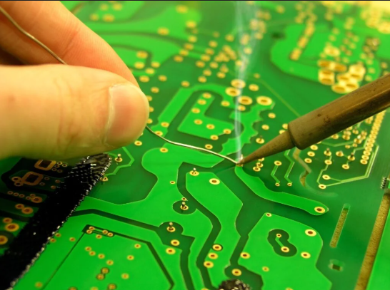
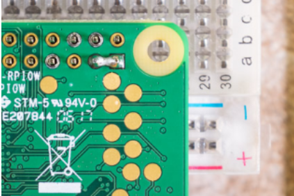

Soldadura: técnicas, proceso y control de calidad
Introducción
La soldadura electrónica une mecánica y eléctricamente terminales y almohadillas de la PCB mediante una aleación (SnPb o libre de plomo, por ejemplo SAC305). La calidad de la unión depende del perfil térmico (temperatura y tiempo), la limpieza, la geometría de los pads y la técnica del operador. Aquí se resumen técnicas, proceso paso a paso, buenas prácticas y los defectos más comunes con su prevención y corrección.
Objetivos
- Dominar el proceso básico de soldadura manual en THT y SMD.
- Seleccionar temperatura de punta, diámetro de soldadura y parámetros adecuados.
- Aplicar inspección visual y criterios de aceptación con filete cóncavo y humectación uniforme.
- Identificar y corregir trece defectos frecuentes en soldadura de PCB.
Pasos para usar un cautín
- Seguridad: usa gafas, recoge el cabello y despeja el área; nunca toques la punta ni dejes el cautín sobre la mesa.
- Preparación del equipo: coloca el cautín en su base con esponja o lana metálica y verifica que el cable no estorbe.
- Encendido: ajusta la temperatura adecuada (330–370 °C con plomo, 360–400 °C sin plomo) según el tipo de soldadura y pieza.
- Limpieza inicial de la punta: limpia suavemente la punta en la esponja/lanilla para retirar óxidos y residuos.
- Estañado de la punta: aplica una pequeña cantidad de soldadura a la punta caliente para mejorar la transferencia de calor.
- Fijación de la PCB/componente: sujeta la placa con base o tercera mano y asegura los componentes a soldar.
- Calentamiento del punto: apoya la punta tocando a la vez pad y terminal durante 1–2 segundos para llevarlos a temperatura.
- Aporte de soldadura: acerca el hilo de soldadura al punto caliente (no a la punta) hasta formar un filete cóncavo.
- Retiro correcto: retira primero el hilo de soldadura y después el cautín, evitando mover la unión mientras solidifica.
- Limpieza entre uniones: limpia la punta periódicamente para conservarla brillante y libre de residuos.
- Apagado y enfriamiento: apaga el cautín al terminar, déjalo enfriar en su base y guarda el equipo con el cable ordenado.
- Inspección final: revisa que el filete sea uniforme, sin poros ni puentes, y que el componente esté bien alineado.
Técnicas de soldadura
Soldadura manual THT
Aplicación con cautín (330–370 °C con plomo, 360–400 °C sin plomo). Calentar pad y pin durante 1–2 s, aportar soldadura en el punto caliente y retirar en el mismo ángulo. Mantener la punta limpia y estañada.
Punta adecuada Tiempo de contacto cortoSoldadura manual SMD
Fijar una pata con una gota, alinear el componente y soldar el resto por arrastre controlando la temperatura. Usar punta tipo chisel pequeña para controlar el menisco.
Arrastre Control térmicoReflujo con horno
Depositar pasta con stencil, colocar componentes y seguir un perfil térmico con preheat, soak, reflow y cooldown para asegurar humectación y evitar levantamiento de piezas.
Perfil térmico StencilSoldadura por ola
Flujo, precalentamiento y paso por la ola para THT masivo. Cuidar orientación y máscara antisoldante para evitar puentes.
Precalentar Máscara antisoldanteProceso de soldadura (paso a paso)
- Preparación: limpiar PCB y terminales, fijar la placa, seleccionar punta y temperatura.
- Calentamiento: apoyar la punta tocando a la vez pad y terminal durante 1–2 s.
- Aporte: acercar el hilo de soldadura al punto caliente hasta formar filete cóncavo.
- Retiro y enfriamiento: retirar soldadura y luego la punta sin mover la unión.
- Limpieza: remover residuos cuando corresponda y cortar terminales.
- Inspección: comprobar brillo uniforme, humectación circunferencial y ausencia de poros o puentes.
Una buena soldadura
- Geometría: cóncavo, transición suave del pad al terminal, sin abultamientos.
- Cobertura: humectación visible 360° alrededor del pin o a lo largo del pad SMD.
- Superficie: continua y lisa, sin poros, grietas, bolas ni residuos adheridos.
- Volumen: suficiente para anclaje mecánico, sin ocultar completamente el contorno del terminal.
- Coloración del sustrato: sin decoloración por calor ni pads levantados.
- Eléctrico: continuidad baja entre nodos conectados y aislamiento alto entre redes vecinas.
Buenas prácticas
- Mantener la punta limpia y estañada con esponja húmeda o lana metálica.
- Evitar sobrecalentar pads y componentes con tiempo de contacto corto.
- Elegir diámetro de soldadura acorde al encapsulado (0.5–0.8 mm SMD; 0.8–1.0 mm THT).
- Diseñar con alivio térmico en planos extensos y separaciones adecuadas entre pads.
Malas técnicas y defectos comunes.
Lista de defectos frecuentes en soldadura manual y reflow. A continuación, causas, prevención y corrección.
1) Puentes de soldadura
Causa: exceso de soldadura o punta grande; separación de pads insuficiente.
Prevención: punta adecuada y menor material; máscara antisoldante correcta.
Corrección: mecha o chupón, reflujo local y limpieza.
2) Exceso de soldadura
Señal: abombamiento que oculta el menisco.
Prevención: dosificar aporte y usar diámetro menor.
Corrección: retirar excedente con mecha o chupón y rehacer con poco material.
3) Bolas de soldadura
Causa: salpicado por perfil inadecuado, contaminación u óxidos.
Prevención: limpieza y control de temperatura.
Corrección: retirar esferas y reflujo local.
4) Soldadura fría
Señal: superficie opaca y granulada con mala humectación.
Prevención: calentar pad y pin a la vez con temperatura suficiente.
Corrección: reaplicar calor hasta humectar correctamente.
5) Unión sobrecalentada
Señal: decoloración de PCB o pista y posible daño al componente.
Prevención: tiempo de contacto corto y punta limpia.
Corrección: enfriar, retirar soldadura y rehacer con control térmico.
6) Lapidación
Causa: fuerzas térmicas disparejas levantan un extremo del chip.
Prevención: perfil uniforme, pads simétricos y volumen de pasta parejo.
Corrección: recolocar, soldar con aire caliente y ajustar perfil.
7) Derretimiento insuficiente / fusión incompleta
Señal: filete no moja el pad y presenta bordes agudos.
Prevención: limpieza y control térmico adecuado.
Corrección: reflujo local hasta obtener menisco cóncavo.
8) Saltos u omisiones de soldadura
Causa: falta de pasta/estaño, mala alineación o contacto térmico pobre.
Prevención: stencil correcto con presión uniforme y revisión de colocación.
Corrección: retoque manual con microcantidad de soldadura.
9) Pads levantados
Causa: exceso de calor o fuerza mecánica durante desoldado.
Prevención: temperatura controlada y evitar tirar del pin en caliente.
Corrección: reanclar pad (epoxi conductor o jumper) y soldar con cuidado.
10) Soldadura hambrienta (volumen insuficiente)
Señal: filete delgado con poca resistencia mecánica.
Prevención: aportar volumen adecuado con diámetro correcto.
Corrección: reflujo y adición moderada hasta cubrir el pad.
11) Salpicaduras
Causa: proyección de soldadura por temperatura o contaminación.
Prevención: limpieza y ajuste de perfil térmico.
Corrección: limpieza minuciosa e inspección para descartar microcortos.
12) Orificios
Causa: gases atrapados en el taladro o humedad de la PCB.
Prevención: prebake de la placa, limpieza y control térmico.
Corrección: retrabajo aportando soldadura desde el lado opuesto.
Resultados de soldadura en PCB
Se diseñó la PCB en KiCad considerando reglas de fabricación y separación de pads para soldabilidad. El fresado se realizó en equipo MonoFab, cuidando la limpieza de cobre posterior y la desbarbación de pistas. La soldadura manual se efectuó con una aleación acorde al laboratorio, aplicando tiempos de contacto cortos para evitar delaminación y levantamiento de pads.
Inspección visual
- Puentes: no se observaron uniones entre pads adyacentes.
- Alineación: componentes SMD centrados sobre pads, sin desplazamientos.
- Daños: sin pads levantados ni decoloración por calor.
Pruebas eléctricas
- Continuidad: todas las redes críticas con baja resistencia entre nodos conectados.
- Aislamiento: sin continuidad entre redes independientes cercanas.
- Funcionalidad: el circuito operó conforme a lo esperado.
Conclusiones
Durante el proceso de soldadura de componentes de tamaño reducido se presentaron algunos errores comunes previamente mencionados, como salpicaduras de estaño y exceso en su aplicación. Estos defectos son frecuentes al trabajar con pads pequeños y requieren mayor precisión en el control del calor y la cantidad de soldadura. Sin embargo, la práctica permitió identificar estos puntos críticos y reforzar la importancia de mantener una técnica cuidadosa, herramientas limpias y una temperatura adecuada para lograr un ensamble confiable y estéticamente correcto.